Análise de sobreposição de múltiplos critérios (QGIS3)¶
A análise de múltiplos critérios é o processo de alocar áreas com base em uma variedade de atributos que as áreas selecionadas devem possuir. Embora essa seja uma operação comum em ambiente SIG, ela é melhor executada utilizando camadas raster usando uma abordagem baseada em GRID.
Nota
Sobreposições de Vetor versus Raster
Você pode fazer a análise de sobreposição em camadas vetoriais usando ferramentas de geoprocessamento, como buffer, dissolução, diferença e interseção. Esse método é ideal se você deseja encontrar uma resposta binária ** adequada / não adequada ** e está trabalhando com várias camadas.
Trabalhar com camadas raster oferece uma ** classificação ** da adequação - não apenas o local mais adequado. Também permite combinar qualquer número de camadas de entrada facilmente e atribuir pesos diferentes a cada critério. Em geral, essa é a abordagem preferida para a adequação locacional.
Este tutorial percorre o fluxo de trabalho típico para executar uma análise de adequação de locais - converter dados vetoriais de origem em rasters apropriados, classificá-los novamente e executar operações matemáticas.
Visão geral da tarefa¶
Neste tutorial, identificaremos as áreas adequadas para o desenvolvimento, que são
Perto de estradas e
Longe de corpos d’água, e
Não em uma região protegida.
Obtendo os dados¶
Usaremos camadas de dados vetoriais do OpenStreetMap (OSM). OSM é um banco de dados global de dados de mapas base disponíveis gratuitamente. Geofabrik fornece shapefiles atualizados diariamente dos conjuntos de dados do OpenStreetMap.
Usaremos as camadas de dados OSM do estado de Assam na Índia. Os shapefiles da India obtidos do Geofabrik foram baixados, cortados no limite do estado e empacotados em um único arquivo GeoPackage. Você pode fazer o download de uma cópia do geopackage no link abaixo:
Fonte de Dados: [GEOFABRIK]
Procedimento¶
Navegue até o arquivos
assam.gpkgno QGIS Browser. Expanda e arraste cada uma das 5 camadas de dados individuais para a tela do mapa. Você verá as camadasboundary,roads,protected_regions,water_polygonsandwater_polylinescarregadas no painel Layers de camadas
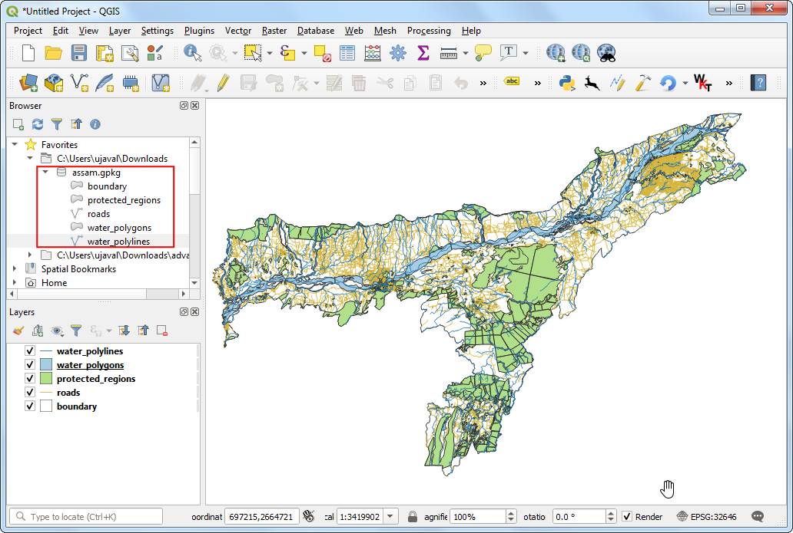
O primeiro passo na análise de sobreposição é converter cada camada de dados em Raster. Uma consideração importante é que todos os rasters devem ter a mesma extensão. Usaremos a camada `` limite ‘’ como extensão para todos os rasters. Vá para: menuselection: Processar -> Caixa de Ferramentas. Pesquise e localize o algoritmo: menuelection: GDAL -> Conversão de vetor -> Converter vetor para raster (rasterizar) `. Clique duas vezes para iniciá-lo.

Na caixa de diálogo: guilabel: Converter vetor para raster (rasterizar), selecione
roadscomo a: guilabel: Camada de entrada. Queremos criar um raster de saída em que os valores de pixel sejam 1 onde há uma estrada e 0 onde não há estradas. Digite `` 1`` como o: guilabel: Um valor fixo to burn. As camadas de entrada estão em um CRS projetado métrico. SelecioneUnidades georreferenciadascomo: guilabel: Unidades de tamanho da saída. Definiremos a resolução do Raster de saída como 15 metros. Selecione `` 15`` como ambos: guilabel: Largura / resolução horizontal e: guilabel:` Altura / resolução vertical`. Em seguida, clique no botão: guilabel: … ao lado de: guilabel: Extensão da saída e selecione` boundary` para: guilabel:` Usar extensão da camada`.
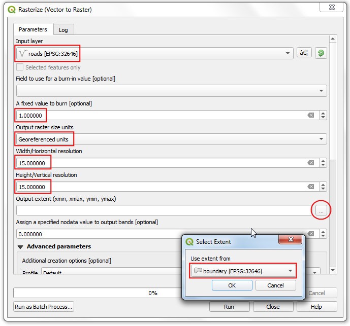
Role para baixo e clique no botão de seta no: guilabel: Atribua um valor sem dados específicado às bandas de saída. Esse campo agora deve ser definido como
Não definido. Isso é importante porque quando a calculadora raster (que usaremos mais tarde) encontra um pixel com valor não definido em qualquer camada, ela define a saída como não definido, resultando em uma saída incorreta. Defina o raster de saída: guilabel: Rasterizado como` raster_roads.tif` e clique em: guilabel:` Executar`.

Once the processing finishes, you will see a new layer raster_roads loaded in the Layers panel. The default styling will show pixels with roads as white and others as black. We want to convert other 4 vector layers to rasters as well. Rather than running the rasterize algorithm one-by-one, we can use the built-in batch-processing functionality to convert them all at once. See Batch Processing using Processing Framework (QGIS3) tutorial to learn more about batch processing. Right-click the
Rasterize (vector to raster)algorithm and select Execute as Batch Process.
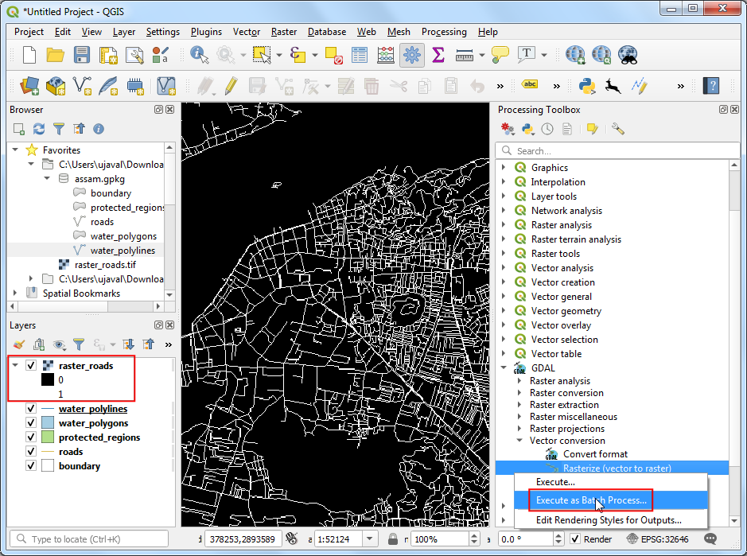
Na caixa de diálogo: guilabel: Processamento em lote, clique no botão: guilabel:` … na primeira linha da coluna: guilabel: Camada de entrada`. Selecione as camadas `` boundary``, `` protected_regions``, `` water_polygons`` e `` water_polylines`` e clique em: guilabel: OK.
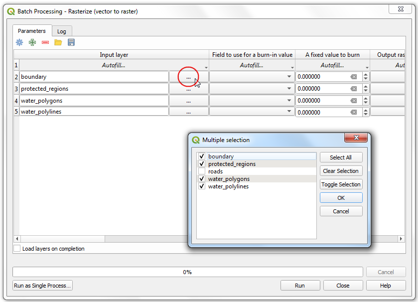
Preencha os parâmetros com os mesmos valores que usamos na camada de estradas. Após preencher a primeira linha do parâmetro, use a opção: menuselection: Preenchimento automático -> Preencher para baixo para adicionar o mesmo valor para todas as camadas.

Na última coluna: guilabel: Rasterized, clique no botão: guilabel:` … na primeira linha. Selecione ` Preencher com valores de parâmetros`` como: guilabel: modo de preenchimento automático e` Camada de entrada` como o: guilabel:` Parâmetro a ser usado`. Clique em: guilabel: OK.

Navegue até um diretório no seu computador e nomeie a camada como `` raster_``. A interface de processamento em lote completará automaticamente o nome com o nome da camada e preencherá todas as linhas. Verifique se a caixa: guilabel: Carregar camadas após a conclusão está marcada e clique em: guilabel:` OK`.
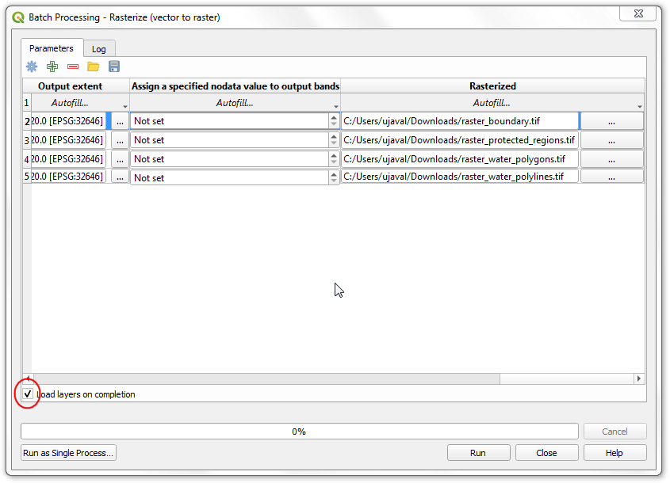
Quando o processamento terminar, você terá 4 novas camadas raster carregadas no painel: guilabel: Camadas. Você notará que temos 2 camadas relacionadas à água - ambas representando água. Podemos mesclá-los para ter uma única camada representando áreas de água na região. Procure e localize: menuelection: Raster analysis -> Raster calculator algoritmo na Processing Toolbox. Clique duas vezes para iniciá-lo.
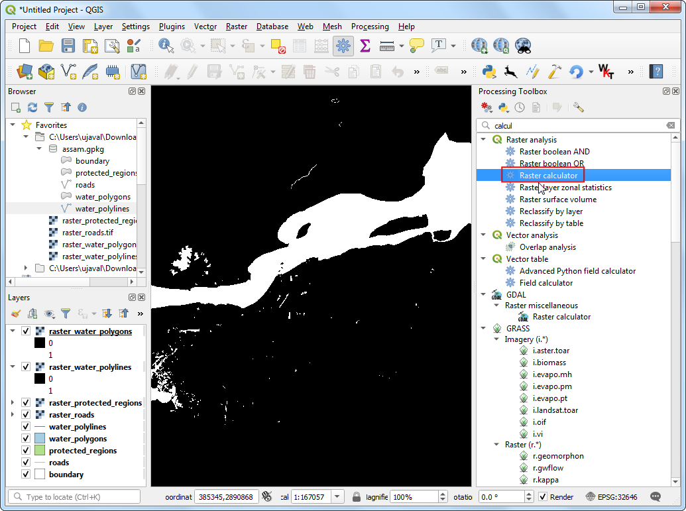
Digite a seguinte expressão na caixa: guilabel: Expressão. Você pode clicar na camada apropriada na caixa: guilabel: Layers para inserir automaticamente os nomes das camadas. Essa expressão significa que queremos somar os valores de pixel na primeira banda das duas camadas Raster de água. Clique no botão: guilabel: … ao lado de: guilabel: Camada(s) de referência e selecione raster_water_polygons` como a camada de referência. Nomeie a saída `` raster_water_merged.tif`` e clique em: guilabel: Run.
"raster_water_polygons@1" + "raster_water_polylines@1"
A varredura resultante resultante terá pixels com o valor 1 para todas as áreas com água. Mas você notará que existem algumas regiões em que havia um polígono da água e uma polilinha da água. Essas áreas terão pixels com o valor 2 - o que não está correto. Podemos corrigi-lo com uma expressão simples. Abra: menuselection: Análise de varredura -> Calculadora Raster novamente.

Digite a expressão a seguir, que atribuirá o valor 1 que corresponde à expressão e 0, caso contrário. Clique no botão: guilabel: … ao lado de: guilabel: Camada (s) de referência e selecione a camada raster_water_merged`. Nomeie a saída `` raster_water.tif`` e clique em: guilabel: Executar.
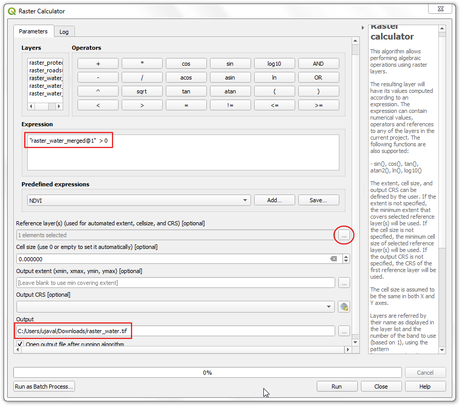"raster_water_merged@1" > 0
A camada resultante `` raster_water`` agora possui pixels com apenas 0 e 1 valores.
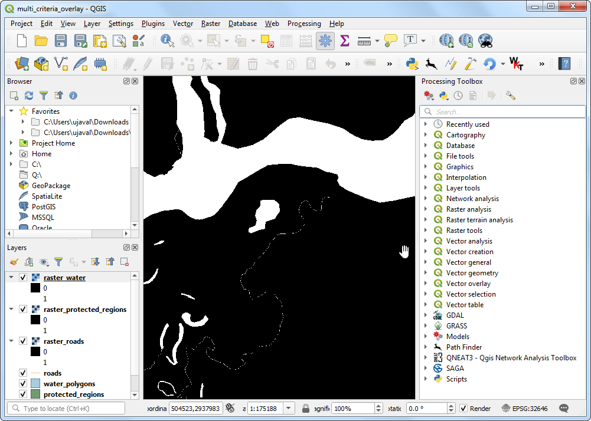
Agora que temos camadas que representam os pixels da estrada e da água, podemos gerar rasters de proximidade. Também são conhecidas como distâncias euclidianas - onde cada pixel do raster de saída representa a distância do pixel mais próximo no raster de entrada. Esse raster resultante pode ser usado para determinar as áreas adequadas que estão a uma certa distância da camada de entrada. Procure e localize o: menuelection: GDAL -> Análise de dados Raster -> Proximidade (distancia raster) algoritmo `. Clique duas vezes para iniciá-lo.
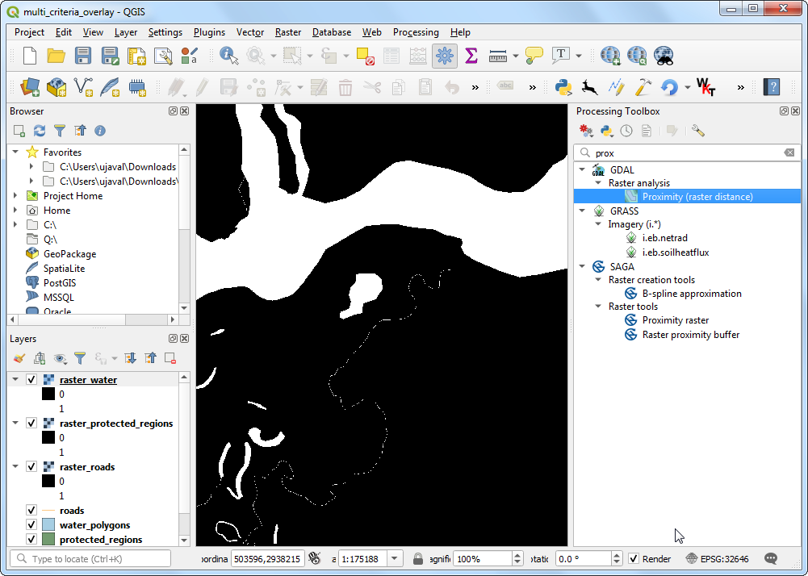
Na caixa de diálogo: guilabel: Proximidade (distancia raster), selecione `` raster_roads`` como a: guilabel: Camada de entrada. Escolha `` Coordenadas georreferenciadas`` como: guilabel: Unidades de distância. Como as camadas de entrada estão em um CRS projetado com metros como unidades, insira `` 5000`` (5 quilômetros) como: guilabel: Distância máxima a ser gerada. Certifique-se de que o valor: guilabel: Nodata a ser usado para o raster de proximidade de destino seja` Não definido`. Nomeie o arquivo de saída como `` roads_proximity.tif`` e clique em: guilabel: Run.
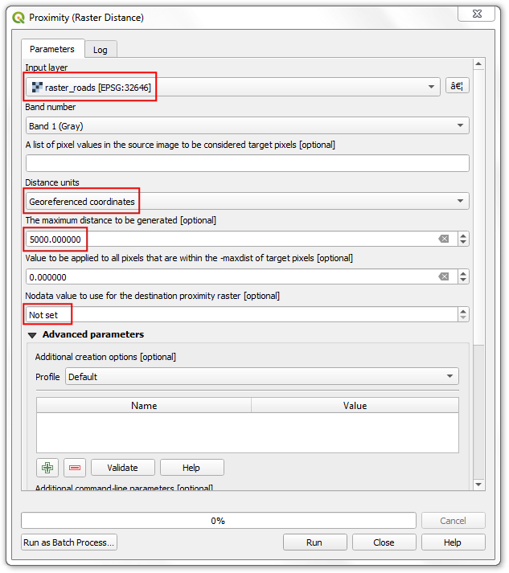
Nota
It make take upto 15 minutes for this process to run. It is a computationaly intensive algorithm that needs to compute distance for each pixel of the input raster and our input contains over 1 billion pixels.
Quando o processamento terminar, uma nova camada `` roads_proximity`` será adicionada ao painel: guilabel: Camadas. Para visualizá-lo melhor, vamos mudar o estilo padrão. Clique no botão: guilabel: Abra o painel Layer Styling no painel: guilabel:` Camadas`. Altere o valor: guilabel: Max para` 5000` em: guilabel:` Gradiente de cor`.
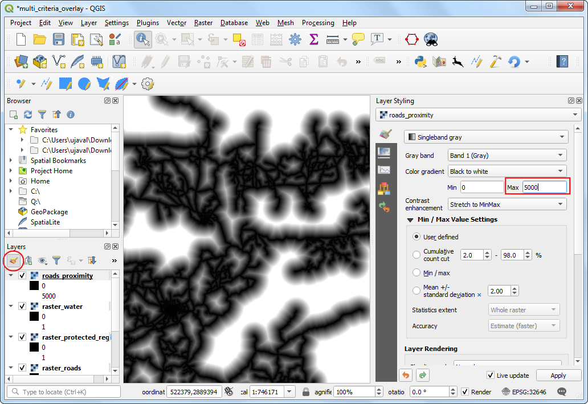
Repita o algoritmo: guilabel: Proximity (Raster Distance) para a camada `` raster_water`` com os mesmos parâmetros e nomeie a saída `` water_proximity.tif``.

Depois que o processamento terminar, você poderá aplicar o estilo semelhante ao anterior para visualizar melhor os resultados. Se você clicar em torno do raster resultante, verá que é um continuum de valores de 0 a 5000. Para usar esse raster na análise de sobreposição, devemos primeiro classificá-la novamente para criar valores discretos. Abra: menuselection: Análise de Raster -> Calculadora Raster novamente.

Queremos atribuir uma pontuação mais alta aos pixels próximos às estradas. Então, vamos usar o seguinte esquema.
0-1000m –> 100
1000-5000m –> 50
>5000m –> 10
Digite a seguinte expressão que aplica os critérios acima na entrada. Clique no botão: guilabel: … ao lado de: guilabel: Camada (s) de referência e selecione a camada roads_proximity`. Nomeie a saída `` roads_reclass.tif`` e clique em: guilabel: Run.
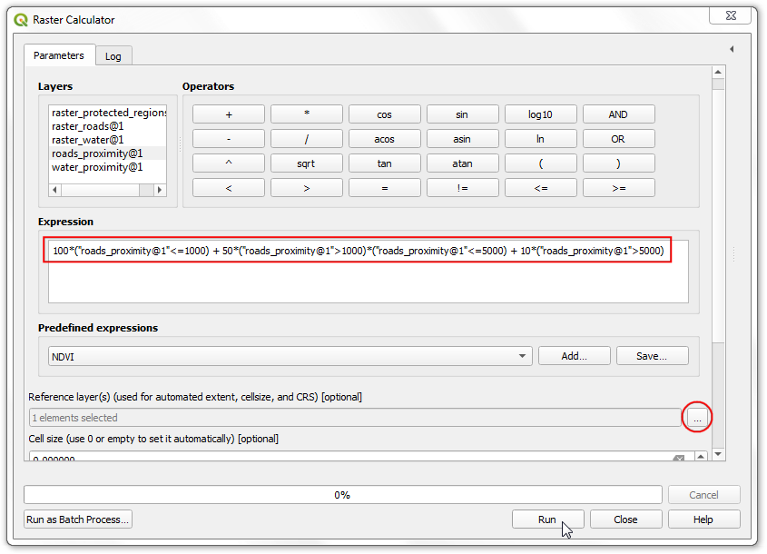100*("roads_proximity@1"<=1000) + 50*("roads_proximity@1">1000)*("roads_proximity@1"<=5000) + 10*("roads_proximity@1">5000)
Once the re-classification process finishes, a new layer
roads_reclasswill be added to the Layers panel. This layer has only 3 different values, 10, 50 and 100 indicating relative suitability of the pixels with regards to distance from roads. Open algorithm again.
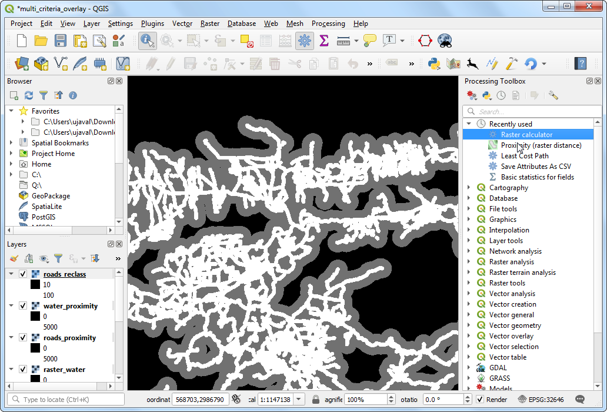
Repita o processo de reclassificação para a camada `` water_proximity``. Aqui o esquema será inverso, onde os pixels mais distantes da água terão uma pontuação mais alta.
0-1000m –> 10
1000 -5000m —> 50
>5000m –> 100
Digite a seguinte expressão que aplica os critérios acima na entrada. Clique no botão: guilabel: … ao lado de: guilabel: Camada (s) de referência e selecione camada water_proximity`. Nomeie a saída `` water_reclass.tif`` e clique em: guilabel: Run.
100*("water_proximity@1">5000) + 50*("water_proximity@1">1000)*("water_proximity@1"<=5000) + 10*("water_proximity@1"<1000)
Agora estamos prontos para fazer a análise final da sobreposição. Lembre-se de que nossos critérios para determinar a adequação são os seguintes - próximos às estradas, longe da água e não em uma região protegida. Abra: menuselection: Análise de varredura -> Calculadora de varredura. Digite a seguinte expressão que aplica esses critérios. Observe que multiplicamos o resultado com `` raster_boundary @ 1`` no final para descartar os valores de pixel fora do limite do estado. Clique no botão: guilabel: … ao lado de: guilabel: Camada (s) de referência e selecione camada `` raster_boundary``. Nomeie a saída como `` overlay.tif`` e clique em: guilabel: Run.
("roads_reclass@1" + "water_reclass@1")*("raster_protected_regions@1" != 1 )*"raster_boundary@1"
Nota
Neste exemplo, estamos atribuindo peso igual à proximidade da estrada e da água. No cenário da vida real, você pode ter vários critérios com importância diferente. Você pode simular isso multiplicando os separadores pelos pesos apropriados na expressão acima. Por exemplo, se a proximidade das estradas tiver o dobro da importância da proximidade da água, você poderá multiplicar o raster `` roads_reclass`` por `` 2`` na expressão acima.
Quando o processamento terminar, a rasterização resultante `` overlay`` será adicionada ao painel: guilabel: Layers. Os valores de pixel nessa varredura variam de 0 a 200 - onde 0 é o menos adequado e 200 é a área mais adequada para o desenvolvimento. Clique no botão: guilabel: Abra o painel Layer Styling no painel: guilabel:` Layers`.
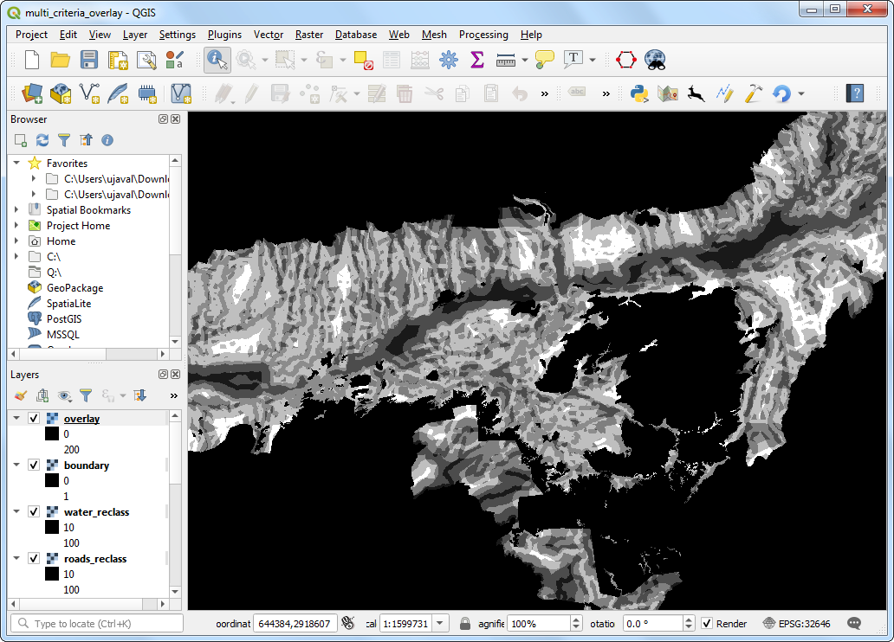
Selecione o renderizador `` singleband_pseudocolor`` e a rampa de cor `` Spectral``. Clique em: guilabel: Classificar para aplicar a rampa de cores no raster.
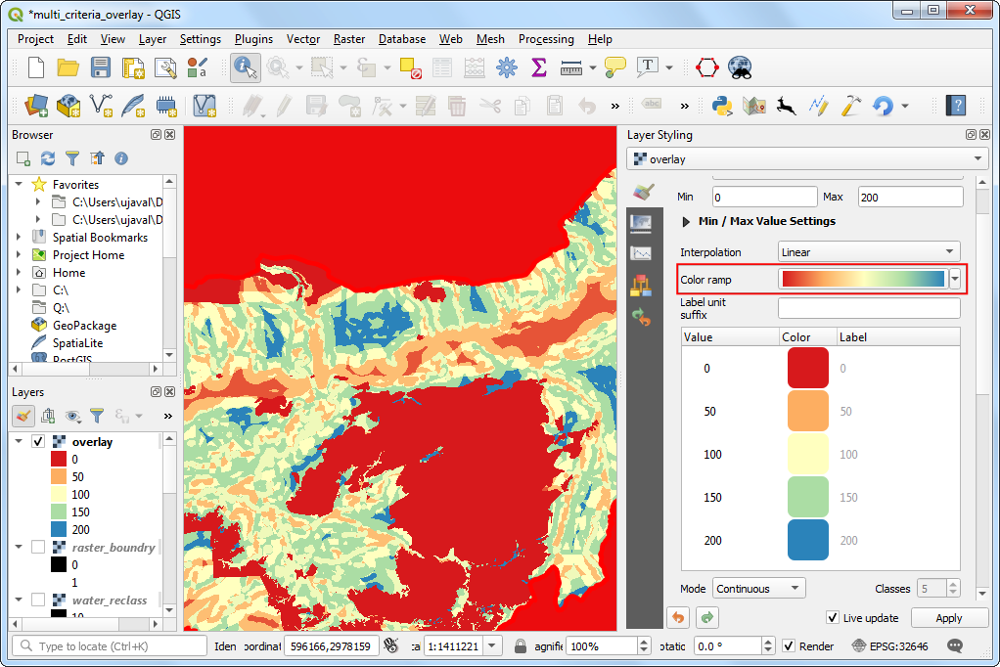
Clique nos valores padrão das etiquetas ao lado de cada cor e insira as etiquetas apropriadas. Os rótulos também aparecerão como a legenda na camada `` overlay``.
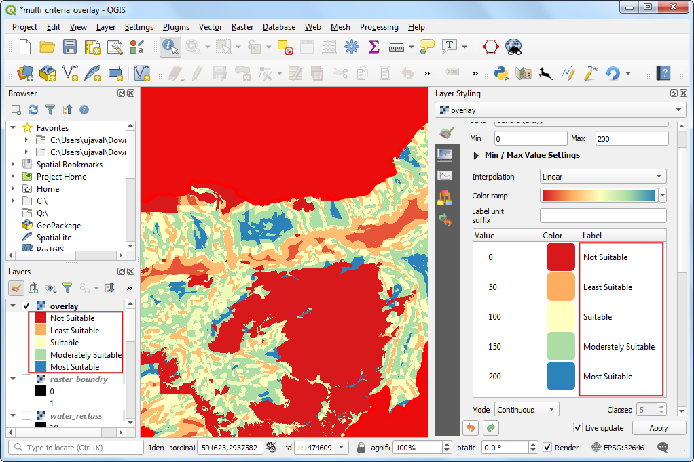
Camadas de varredura são grades retangulares. Queremos ocultar pixels fora do limite do estado. Uma maneira fácil de conseguir isso é aplicar um `` polígono invertido ‘’ renderizado na camada limite do vetor. Role para baixo no painel: guilabel: Layers e localize a camada` boundary`. Selecione `` Polígonos invertidos`` como renderizador e deixe outras opções como padrão.
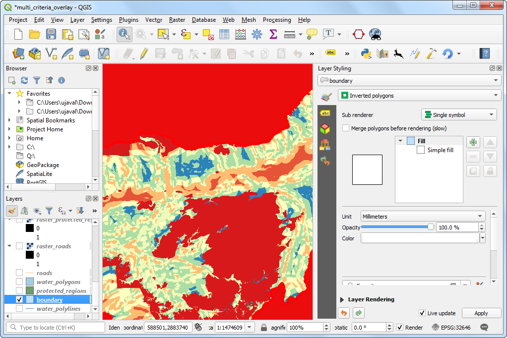
Para que o efeito do renderizador seja mostrado, ele precisa estar da lista de camadas. Clique com o botão direito do mouse na camada `` boundary`` e selecione: guilabel: Mover para cima.

Verifique a camada e a tela do mapa será atualizada para mostrar o raster `` overlay`` cortada na camada
boundary. Esta é a saída final que mostra áreas dentro do estado que são adequadas para o desenvolvimento.